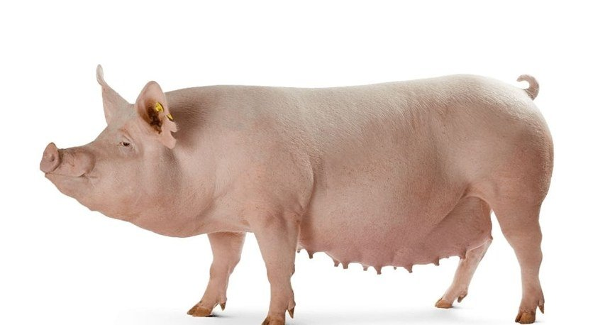

HOMOCLAVEREI_E_008Sano
| Peso al nacer | 32 |
| Peso destete | 67 |
| Consumo diario leche | 23 |
| Ganancia peso | 32 |
| Consumo alimento | 98 |
| Edad al destete | 77 |
| Perimetro | 9,4 |
| Perimetro | agresivo |
| Vigor nacer | 15 |
| Consumo calostro | bajo |
| Salud general | sano |
| Consistencia heces | normal |
| Reflejo | fuerte |
| Condicion umbilical | sano |
| Apetito | bueno |
| Aspecto pelaje | brillante |
